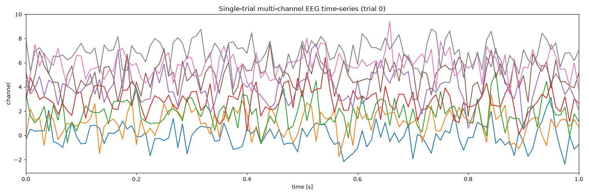
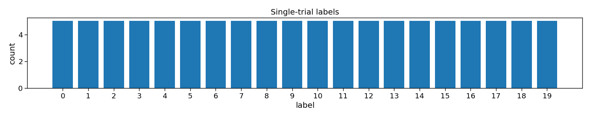
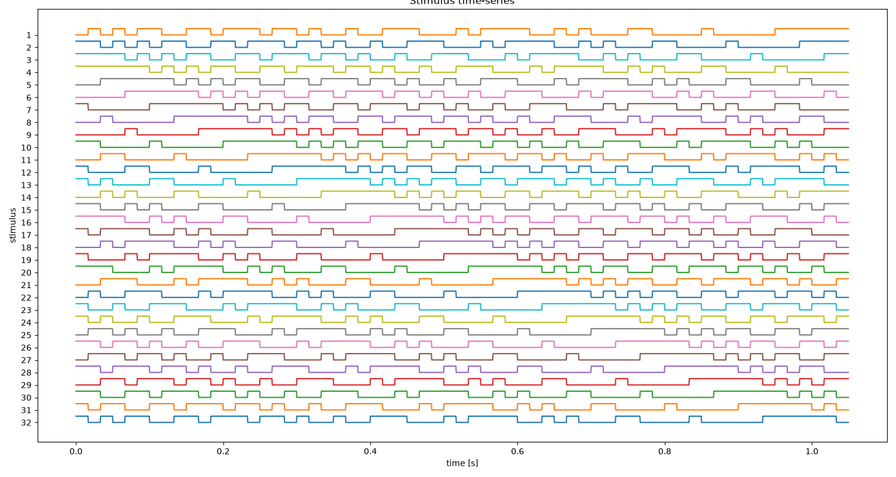
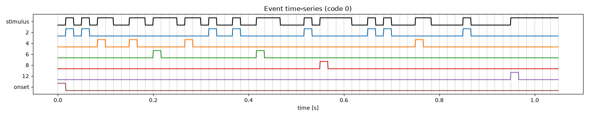
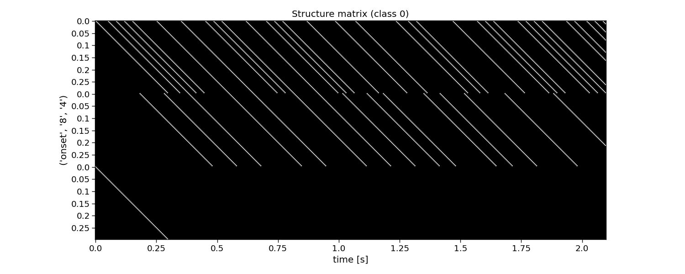
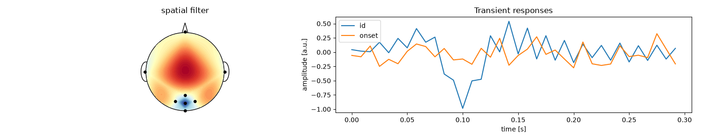
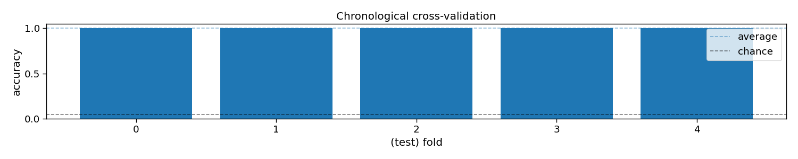
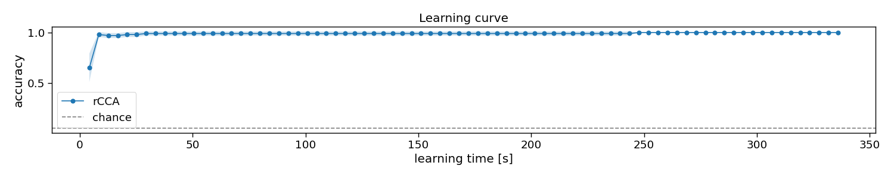
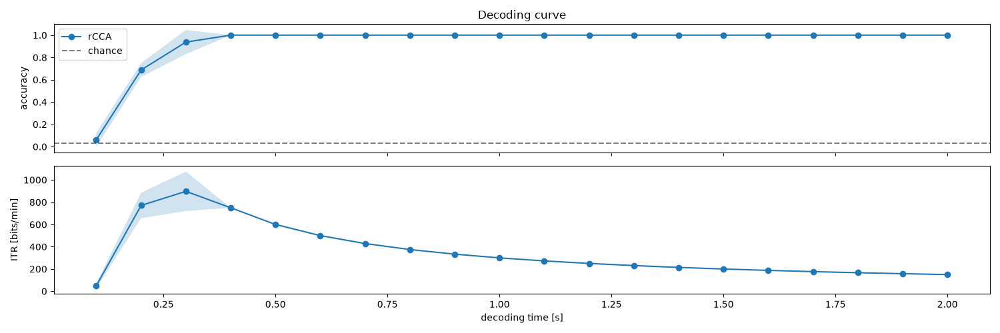

Note
Go to the end to download the full example code.
rCCA
This script shows how to use rCCA from PyntBCI for decoding c-VEP trials. The rCCA method uses a template matching classifier where templates are estimated using reconvolution and canonical correlation analysis (CCA).
References
import matplotlib.pyplot as plt
import numpy as np
import pyntbci
Simulate data
The cell below simulates some synthetic c-VEP data in response to a circularly shifted m-sequence.
FS = 120
PR = 60
SHIFT = 2
v = pyntbci.stimulus.make_m_sequence()
SHIFTS = np.arange(0, v.shape[1], SHIFT)
V = pyntbci.stimulus.shift(v, SHIFT)
V = np.repeat(V, FS // PR, axis=1)
N_CLASSES = V.shape[0]
CYCLE_SIZE = V.shape[1] / FS
LAGS = SHIFTS / PR
N_TRIALS = 1 * N_CLASSES
N_CHANNELS = 16
N_SAMPLES = int(2 * CYCLE_SIZE * FS)
N_COMPONENTS = 3
N_FILTER_BANDS = 4
ENCODING_LENGTH = 0.3
SEED = 42
X, y, V = pyntbci.eeg.generate_c_vep(
N_TRIALS, N_CHANNELS, N_SAMPLES, FS, n_classes=N_CLASSES, stimulus=V, primary_channels=8, random_state=SEED
)
Inspect data
# Print data shapes
print("X", X.shape, "(trials x channels x samples)", X.dtype) # EEG
print("y", y.shape, "(trials)", y.dtype) # labels
print("V", V.shape, "(classes, samples)", V.dtype) # codes
print("fs", FS, "Hz") # sampling frequency
print("fr", PR, "Hz") # presentation rate
# Visualize EEG data
i_trial = 0 # the trial to visualize
plt.figure(figsize=(15, 5))
plt.plot(np.arange(0, N_SAMPLES) / FS, np.arange(N_CHANNELS) + X[i_trial, :, :].T)
plt.xlim([0, 1]) # limit to 1 second EEG data
plt.xlabel("time [s]")
plt.ylabel("channel")
plt.title(f"Single-trial multi-channel EEG time-series (trial {i_trial})")
plt.tight_layout()
# Visualize labels
plt.figure(figsize=(15, 3))
hist = np.histogram(y, bins=np.arange(N_CLASSES + 1))[0]
plt.bar(np.arange(N_CLASSES), hist)
plt.xticks(np.arange(N_CLASSES))
plt.xlabel("label")
plt.ylabel("count")
plt.title("Single-trial labels")
plt.tight_layout()
# Visualize stimuli
fig, ax = plt.subplots(1, 1, figsize=(15, 8))
pyntbci.plotting.stimplot(V, fs=FS, ax=ax, plotfs=False)
fig.tight_layout()
ax.set_title("Stimulus time-series")



X (32, 16, 252) (trials x channels x samples) float32
y (32,) (trials) int64
V (32, 126) (classes, samples) uint8
fs 120 Hz
fr 60 Hz
Text(0.5, 1.0, 'Stimulus time-series')
The event matrix
The first step for reconvolution is to find within the sequences the repetitive events. This can be imposed “manually” by choosing the event definition that we believe the brain responds to. Here, the so-called “duration” event is used, which marks the length of a flash as the important piece of information. As the sequences in this dataset were modulated, there are only two events: a short and a long flash. Additionally, a third event is added that will account for the onset of a trial, during which all of a sudden the screen started flashing. The event matrix is a matrix of n classes, e events, and m samples.
Please, note that more event definitions exist, which can be explored with the event variable of rCCA. For instance, event=”contrast” is a useful event definition as well, which looks at rising and falling edges, generalising over the length of a flash.
# Create event matrix
E, events = pyntbci.utilities.event_matrix(V, event="duration", onset_event=True)
print("E:", E.shape, "(classes x events x samples)", E.dtype)
print("Events:", ", ".join([str(event) for event in events]))
# Visualize event time-series
i_class = 0 # the class to visualize
fig, ax = plt.subplots(1, 1, figsize=(15, 3))
pyntbci.plotting.eventplot(V[i_class, :: int(FS / PR)], E[i_class, :, :: int(FS / PR)], fs=PR, ax=ax, events=events)
ax.set_title(f"Event time-series (code {i_class})")
plt.tight_layout()
# Visualize event matrix
i_class = 0
plt.figure(figsize=(15, 3))
plt.imshow(E[i_class, :, :], cmap="gray")
plt.gca().set_aspect(10)
plt.xticks(np.arange(0, E.shape[2], 60), np.arange(0, E.shape[2], 60) / FS)
plt.yticks(np.arange(E.shape[1]), events)
plt.xlabel("time [s]")
plt.title(f"Event matrix (class {i_class})")
plt.tight_layout()

E: (32, 6, 126) (classes x events x samples) float32
Events: 2, 4, 6, 8, 12, onset
The structure matrix
The second step for reconvolution is to model the expected responses associated to each of the events and their overlap. This is done in the so-called structure matrix (or design matrix). The structure matrix is essentially a Toeplitz version of the event matrix. It allows to model the c-VEP as the dot product of r (the transient response to an event) and M (the structure matrix for a specific class) for the ith class. The structure matrix is a matrix of n classes, l response samples, and m samples.
An important parameter here is the encoding_length argument. An easy abstraction is to assume the same length for the responses to each of the events. However, one could also set different lengths for each of the events.
# Create structure matrix
encoding_length = int(0.3 * FS) # 300 ms responses
M = pyntbci.utilities.encoding_matrix(E, encoding_length)
print("M: shape:", M.shape, "(classes x encoding_length*events x samples)", M.dtype)
# Plot structure matrix
i_class = 0 # the class to visualize
plt.figure(figsize=(15, 6))
plt.imshow(M[i_class, :, :], cmap="gray")
plt.xticks(np.arange(0, M.shape[2], 60), np.arange(0, M.shape[2], 60) / FS)
plt.yticks(np.arange(0, E.shape[1] * encoding_length, 12), np.tile(np.arange(0, encoding_length, 12) / FS, E.shape[1]))
plt.xlabel("time [s]")
plt.ylabel(events[::-1])
plt.title(f"Structure matrix (class {i_class})")
plt.tight_layout()
fig.tight_layout()

M: shape: (32, 216, 126) (classes x encoding_length*events x samples) float32
Reconvolution CCA
The full reconvolution CCA (rCCA) pipeline is implemented as a scikit-learn compatible class in PyntBCI in pyntbci.classifiers.rCCA. All it needs are the binary sequences stimulus, the sampling frequency fs, the event definition event, the transient response size encoding_length and whether to include an event for the onset of a trial onset_event.
When calling rCCA.fit(X, y) with training data X and labels y, the full decomposition is performed to obtain spatial filters rCCA.w_ and temporal filter rCCA.r_.
Please note that the transient responses are concatenated in this temporal filter rCCA.r_. One can use rCCA.events_ to disentangle these and find which response is associated to which event.
# Perform CCA
encoding_length = 0.3 # 300 ms responses
rcca = pyntbci.classifiers.rCCA(stimulus=V, fs=FS, event="id", encoding_length=encoding_length, onset_event=True)
rcca.fit(X, y)
print("w: ", rcca.w_.shape, "(channels)")
print("r: ", rcca.r_.shape, "(encoding_length*events)")
# Plot CCA filters
fig, ax = plt.subplots(1, 2, figsize=(15, 3))
ax[0].plot(np.arange(N_CHANNELS), rcca.w_)
ax[0].set_title("spatial filter")
ax[0].set_xlabel("channel")
ax[0].set_ylabel("weight")
tmp = np.reshape(rcca.r_, (len(rcca.events_), -1))
for i in range(len(rcca.events_)):
ax[1].plot(np.arange(int(encoding_length * FS)) / FS, tmp[i, :])
ax[1].legend(rcca.events_)
ax[1].set_xlabel("time [s]")
ax[1].set_ylabel("amplitude [a.u.]")
ax[1].set_title("Transient responses")
fig.tight_layout()

w: (16, 1) (channels)
r: (72, 1) (encoding_length*events)
Cross-validation
To perform decoding, one can call rCCA.fit(X_trn, y_trn) on training data X_trn and labels y_trn and rCCA.predict(X_tst) on testing data X_tst. In this section, a chronological cross-validation is set up to evaluate the performance of rCCA.
# Chronological cross-validation
n_folds = 4
folds = np.repeat(np.arange(n_folds), int(N_TRIALS / n_folds))
# Loop folds
accuracy = np.zeros(n_folds)
for i_fold in range(n_folds):
# Split data to train and test set
X_trn, y_trn = X[folds != i_fold, :, :], y[folds != i_fold]
X_tst, y_tst = X[folds == i_fold, :, :], y[folds == i_fold]
# Train template-matching classifier
rcca = pyntbci.classifiers.rCCA(stimulus=V, fs=FS, event="duration", encoding_length=0.3, onset_event=True)
rcca.fit(X_trn, y_trn)
# Apply template-matching classifier
yh_tst = rcca.predict(X_tst)
# Compute accuracy
accuracy[i_fold] = np.mean(yh_tst == y_tst)
# Compute theoretical ITR (i.e., without inter-trial interval)
itr = pyntbci.utilities.itr(N_CLASSES, accuracy, N_SAMPLES / FS)
# Plot accuracy (over folds)
plt.figure(figsize=(15, 3))
plt.bar(np.arange(n_folds), accuracy)
plt.axhline(accuracy.mean(), linestyle="--", alpha=0.5, label="average")
plt.axhline(1 / N_CLASSES, color="k", linestyle="--", alpha=0.5, label="chance")
plt.xlabel("(test) fold")
plt.ylabel("accuracy")
plt.legend()
plt.title("Chronological cross-validation")
plt.tight_layout()
# Print accuracy (average and standard deviation over folds)
print(f"Accuracy: avg={accuracy.mean():.2f} with std={accuracy.std():.2f}")
print(f"ITR: avg={itr.mean():.1f} with std={itr.std():.2f}")

Accuracy: avg=1.00 with std=0.00
ITR: avg=142.9 with std=0.00
Learning curve
In this section, we will apply the decoder to varying number of training trials, to estimate a so-called learning curve. With this information, one could decide how much training data is required, or compare algorithms on how much training data they require to estimate their parameters.
# Chronological cross-validation
n_folds = 4
folds = np.repeat(np.arange(n_folds), int(N_TRIALS / n_folds))
# Set learning curve axis
train_trials = np.arange(1, 1 + np.sum(folds != 0))
n_train_trials = train_trials.size
# Loop folds
accuracy = np.zeros((n_folds, n_train_trials))
for i_fold in range(n_folds):
# Split data to train and test set
X_trn, y_trn = X[folds != i_fold, :, :], y[folds != i_fold]
X_tst, y_tst = X[folds == i_fold, :, :], y[folds == i_fold]
# Loop train trials
for i_trial in range(n_train_trials):
# Train classifier. Note, gamma_m regularizes the (216-feature) encoding-matrix covariance, which is needed
# here because the low end of this learning curve fits on very few trials (down to a single one).
rcca = pyntbci.classifiers.rCCA(
stimulus=V, fs=FS, event="duration", encoding_length=0.3, onset_event=True, gamma_m=0.1
)
rcca.fit(X_trn[: train_trials[i_trial], :, :], y_trn[: train_trials[i_trial]])
# Apply classifier
yh_tst = rcca.predict(X_tst)
# Compute accuracy
accuracy[i_fold, i_trial] = np.mean(yh_tst == y_tst)
# Plot results
plt.figure(figsize=(15, 3))
avg = accuracy.mean(axis=0)
std = accuracy.std(axis=0)
plt.plot(train_trials * N_SAMPLES / FS, avg, linestyle="-", marker="o", label="rCCA")
plt.fill_between(train_trials * N_SAMPLES / FS, avg + std, avg - std, alpha=0.2, label="_rCCA")
plt.axhline(1 / N_CLASSES, color="k", linestyle="--", alpha=0.5, label="chance")
plt.xlabel("learning time [s]")
plt.ylabel("accuracy")
plt.legend()
plt.title("Learning curve")
plt.tight_layout()

Decoding curve
In this section, we will apply the decoder to varying testing trial lengths, to estimate a so-called decoding curve. With this information, one could decide how much testing data is required, or compare algorithms on how much data they need during testing to classify single-trials.
# Chronological cross-validation
n_folds = 4
folds = np.repeat(np.arange(n_folds), int(N_TRIALS / n_folds))
# Set decoding curve axis
segmenttime = 0.1 # step size of the decoding curve in seconds
segments = np.arange(segmenttime, N_SAMPLES / FS, segmenttime)
n_segments = segments.size
# Loop folds
accuracy = np.zeros((n_folds, n_segments))
for i_fold in range(n_folds):
# Split data to train and test set
X_trn, y_trn = X[folds != i_fold, :, :], y[folds != i_fold]
X_tst, y_tst = X[folds == i_fold, :, :], y[folds == i_fold]
# Setup classifier
rcca = pyntbci.classifiers.rCCA(stimulus=V, fs=FS, event="duration", encoding_length=0.3, onset_event=True)
# Train classifier
rcca.fit(X_trn, y_trn)
# Loop segments
for i_segment in range(n_segments):
# Apply classifier
yh_tst = rcca.predict(X_tst[:, :, : int(FS * segments[i_segment])])
# Compute accuracy
accuracy[i_fold, i_segment] = np.mean(yh_tst == y_tst)
# Compute ITR
itr = pyntbci.utilities.itr(N_CLASSES, accuracy, np.tile(segments[np.newaxis, :], (n_folds, 1)))
# Plot results
fig, ax = plt.subplots(2, 1, figsize=(15, 5), sharex=True)
avg = accuracy.mean(axis=0)
std = accuracy.std(axis=0)
ax[0].plot(segments, avg, linestyle="-", marker="o", label="rCCA")
ax[0].fill_between(segments, avg + std, avg - std, alpha=0.2, label="_rCCA")
ax[0].axhline(1 / N_CLASSES, color="k", linestyle="--", alpha=0.5, label="chance")
avg = itr.mean(axis=0)
std = itr.std(axis=0)
ax[1].plot(segments, avg, linestyle="-", marker="o", label="rCCA")
ax[1].fill_between(segments, avg + std, avg - std, alpha=0.2, label="_rCCA")
ax[1].set_xlabel("decoding time [s]")
ax[0].set_ylabel("accuracy")
ax[1].set_ylabel("ITR [bits/min]")
ax[0].legend()
ax[0].set_title("Decoding curve")
fig.tight_layout()

Total running time of the script: (0 minutes 18.103 seconds)